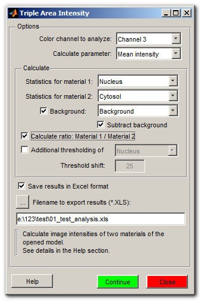
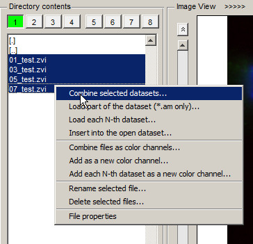
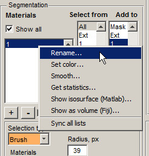
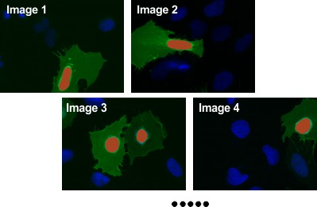
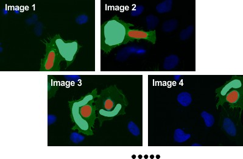
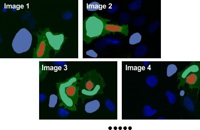
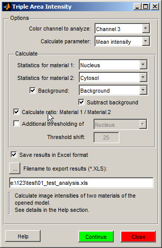
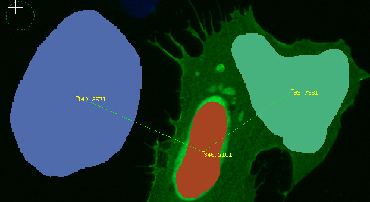
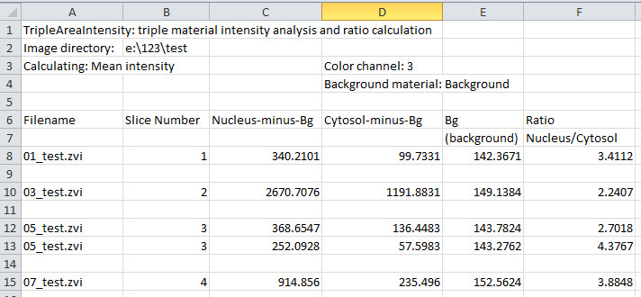

TripleAreaIntensity
This plugin can be used to calculate image intensities (mean, min, max or sum) of 3 areas stored under 3 materials of a model.
The results of the plugin may be seen on the screen of Microscopy Image Browser or saved as Excel spreadsheet.

Contents
How to Use
This example shows comparison of image intensities between cytosol and nucleus in cells.
- 1. Load images as 3D/4D stack. Highlight files in the Directory Contents panel with the Shift + left mouse button. Press the right mouse button and select Combine selected datasets.

- 2. Create a new model: press the Create button in the Segmentation Panel
- 3. Add material to the model: press the + button in the Segmentation Panel; select 1 in the Materials list, press the right mouse button and Rename it to Nucleus.

- 4. Segment the Nuclei. In the simplest case use the Brush tool from the the Segmentation panel.
- 5. Make sure that the 1 is selected in the Add to list and press the Shift+A key button to add the drawn areas to the Nucleus material of the model for all slices.

- 6. Add another material to the model (the + button) and rename it to Cytosol.
- 7. With the Brush tool draw areas of the cytosol. It is important that number of cytosol objects match the number of nuclei! Add it to the 2 material (Segmentation panel->Add to->2).

- 8. Add another material to the model (the + button) and rename it to Background.
- 9. With the Brush tool draw areas outside of the cells to be used to calculate intensities of the image background 3 material (Segmentation panel->Add to->3). There should be at least 1 background area at each image. number of ba

- 10. Start TripleAreaIntensity plugin: Menu->Plugins->IntensityAnalysis->TripleAreaIntensity
- 11. Select color channel and parameter to calculate (Mean, Max, Min Sum intensity).
- 12. Select materials to analyze: Calculate->Statistics for material 1: Nucleus
- 13. Select materials to analyze: Calculate->Statistics for material 2: Cytosol
- 14. Check the Background checkbox and select Background in the corresponding combobox. It is also possible to check the Subtract background checkbox; in this case the intensities of the background will be subtracted from the intensities of materials to analyse.
- 15. Check the Calculate ratio: Material 1 / Material 2 checkbox to get the ratio.
- 16. Define the filename to save the results

- 17. Press the Continue button
The intensities of each object will be calculated and the numbers displayed at the Image View panel. For example in the figure below, intensity of the Background, Nucleus and Cytosol are 142.3671, 340.2101 and 99.7331 correspondingly (please note that the intensity of the background was subtracted from the intensities of other objects). The numbers are stored in the Annotation layer available from the Menu->Models->Annotations. The corresponding objects will also be connected with a line for reference (when the Show connections checkbox is selected). The line is stored in the Selection layer and can be removed using the Shift+C shortcut.

The results of the analysis are stored in the excel file

Additional Options
- The Additional thresholding of allows to define additional thresholding that will be applied to the specified material. When selected, the object is a subject to additional thresholding with a coefficient equal to the intensity of the background + the Threshold shift value.
- Plot ratio as histogram - the ratio between intensities will be displayed as a histogram.
- Export to Matlab - export results to Matlab main workspace as a structure
- Show connections - display connected areas using the Selection layer, the connections can be removed using the Shift+C shortcut
Credits
Written by Ilya Belevich, University of Helsinki
version 1.2, 21.12.2017
email: ilya.belevich @ helsinki.fi
web: http://www.biocenter.helsinki.fi/~ibelev/
Part of the code written by Gunther Struyf was used when writing this function.